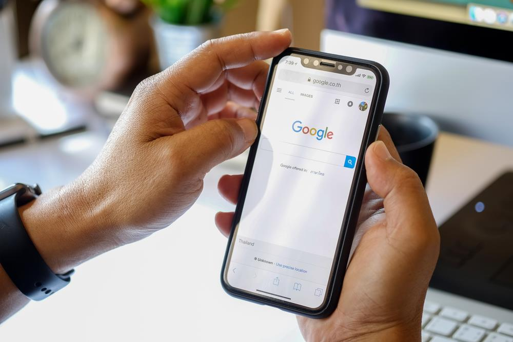

<!DOCTYPE html PUBLIC "-//W3C//DTD XHTML 1.0 Transitional//EN" "http://www.w3.org/TR/xhtml1/DTD/xhtml1-transitional.dtd"><html xmlns="http://www.w3.org/1999/xhtml"><head><meta http-equiv="content-type" content="text/html;charset=UTF-8">

<meta charset="UTF-8">
<meta http-equiv="Content-Type" content="text/html; charset=utf-8">
<meta http-equiv="X-UA-Compatible" content="IE=edge,chrome=1">
<meta name="viewport" content="width=device-width, initial-scale=1.0, maximum-scale=1.0, user-scalable=no">
<meta name="google-site-verification" content="MaU7baWWrEjrqG8OsqSctQTtkQ6ujhstreyK1d5gXkc">
<meta name="ahrefs-site-verification" content="12087e3ea5805ca83cac9aab62259e4f861670b2e94b42db700de7744028f4d4">
<meta name="yandex-verification" content="55a21d82a563a57b">
<meta name="twitter:card" value="summary">
<meta property="og:locale" content="en_US">
<meta property="og:title" content="Webzool | Winning Digital Solutions">
<meta property="og:description" content="Webzool is the #1 SEO company in Los Angeles.We have been providing SEO services for Los Angeles companies.">
<meta property="og:type" content="website">
<meta property="og:url" content="https://www.webzool.io/">
<meta property="og:site_name" content="Webzool Digital Agency">
<meta property="og:image" content="../static/images/og-image-01.png">
<title>SEO Copywriting Tips, Secrets, and Strategies in 2019</title>
<meta name="description" content="SEO Copywriting is the tool for establishing your website's presence. Its benefits last in the long run and can help you save a lot of money.">
<link rel="icon" type="image/png" href="../static/images/favicon.ico">
<link rel="stylesheet" href="../../stackpath.bootstrapcdn.com/bootstrap/4.1.3/css/bootstrap.min.css" crossorigin="anonymous">
<link rel="stylesheet" type="text/css" href="../static/css/slick.css">
<link rel="stylesheet" type="text/css" href="../static/css/slick-theme.css">
<link rel="stylesheet" type="text/css" href="../static/css/main.css" media="all">

<script src="../../www.googletagmanager.com/gtag/js" type="44037c4008e7bc92ce796a5b-text/javascript"></script>

<script type="44037c4008e7bc92ce796a5b-text/javascript">
		! function (f, b, e, v, n, t, s) {
			if (f.fbq) return;
			n = f.fbq = function () {
				n.callMethod ?
					n.callMethod.apply(n, arguments) : n.queue.push(arguments)
			};
			if (!f._fbq) f._fbq = n;
			n.push = n;
			n.loaded = !0;
			n.version = '2.0';
			n.queue = [];
			t = b.createElement(e);
			t.async = !0;
			t.src = v;
			s = b.getElementsByTagName(e)[0];
			s.parentNode.insertBefore(t, s)
		}(window, document, 'script',
			'https://connect.facebook.net/en_US/fbevents.js');
		fbq('init', '410331106460614');
		fbq('track', 'PageView');
	</script>
<noscript></noscript>


<script src="../../www.googletagmanager.com/gtag/js" type="44037c4008e7bc92ce796a5b-text/javascript"></script>
<script type="44037c4008e7bc92ce796a5b-text/javascript">
		window.dataLayer = window.dataLayer || [];

		function gtag() {
			dataLayer.push(arguments);
		}
		gtag('js', new Date());

		gtag('config', 'UA-143891312-1');
	</script>

<script type="44037c4008e7bc92ce796a5b-text/javascript">
		(function (m, e, t, r, i, k, a) {
			m[i] = m[i] || function () {
				(m[i].a = m[i].a || []).push(arguments)
			};
			m[i].l = 1 * new Date();
			k = e.createElement(t), a = e.getElementsByTagName(t)[0], k.async = 1, k.src = r, a.parentNode.insertBefore(k,
				a)
		})
		(window, document, "script", "https://mc.yandex.ru/metrika/tag.js", "ym");

		ym(54457120, "init", {
			clickmap: true,
			trackLinks: true,
			accurateTrackBounce: true,
			webvisor: true
		});
	</script>
<noscript>
		<div></div>
	</noscript>


<script type="44037c4008e7bc92ce796a5b-text/javascript">
		(function (w, d, s, l, i) {
			w[l] = w[l] || [];
			w[l].push({
				'gtm.start': new Date().getTime(),
				event: 'gtm.js'
			});
			var f = d.getElementsByTagName(s)[0],
				j = d.createElement(s),
				dl = l != 'dataLayer' ? '&l=' + l : '';
			j.async = true;
			j.src =
				'https://www.googletagmanager.com/gtm.js?id=' + i + dl;
			f.parentNode.insertBefore(j, f);
		})(window, document, 'script', 'dataLayer', 'GTM-KPDC95D');
	</script>


<noscript><iframe src="https://www.googletagmanager.com/ns.html?id=GTM-KPDC95D" height="0" width="0" style="display:none;visibility:hidden"></iframe></noscript>

<script type="44037c4008e7bc92ce796a5b-text/javascript">
		gtag('config', 'AW-722911980/maqcCM7nmqgBEOyF29gC', {
			'phone_conversion_number': '(855)-681-0959'
		});
	</script>
</head>
<body>
<nav class="navbar navbar-expand-lg navbar-dark bg-tr" id="navbar">
<a class="navbar-brand" href="../index.html">
<span></span>

</a>
<button class="navbar-toggler collapsed" type="button" data-toggle="collapse" data-target="#navbarNav" aria-controls="navbarNav" aria-expanded="false" aria-label="Toggle navigation">
<span class="navbar-toggler-icon"></span>
</button>
<div class="collapse navbar-collapse" id="navbarNav">
<ul class="navbar-nav ml-auto">
<li class="nav-item">
<a class="nav-link" href="../index.html">Home</a>
</li>
<li class="nav-item dropdown">
<a class="nav-link" href="../index.html" id="navbarDropdown" role="button" data-toggle="dropdown" aria-haspopup="true" aria-expanded="false">
Services
</a>
<div class="dropdown-menu" aria-labelledby="navbarDropdown">
<a class="dropdown-item web" href="../web-design/index.html">Web Design & Development<span class="sub">Responsive Web Design Solutions</span></a>
<a class="dropdown-item digital" href="../seo/index.html">Search Engine Optimization<span class="sub">Enjoy the view from the top of the google search results.</span></a>
<a class="dropdown-item brand" href="../branding/index.html">Branding Identity & Graphic Design<span class="sub">Logo and Social Media Design</span></a>
<a class="dropdown-item pr" href="../pr/index.html">PR Services<span class="sub">Promotion Services</span></a>

</div>
</li>
<li class="nav-item">
<a class="nav-link" href="../about/index.html">About Us</a>
</li>
<li class="nav-item">
<a class="nav-link" href="../portfolio/index.html">Portfolio</a>
</li>

<li class="nav-item">
<a class="nav-link" href="../glossary/index.html">Glossary</a>
</li>
<li class="nav-item">
<a class="nav-link" href="../blogs/index.html">Blog</a>
</li>
<li class="nav-item">
<a class="nav-link" href="../contact/index.html">Contact Us</a>
</li>
</ul>
</div>
</nav>
<section class="blog-detail">
<div class="container">
<div class="row">
<div class="col-sm-12">
<div class="meta-box">
<div class="featured-image-box" style="background-image: url('/media/posts/2019/09/09/type.svg');">
</div>
<h1>SEO Copywriting Tips, Secrets, and Strategies in 2019</h1>
<p class="blog-short">SEO Copywriting is the tool for making your website visible. Its benefits last in the long run. Besides, you can save a lot of money for promoting your business.</p>
<p><span class="blog-author-and-date"><i>Samira Valiyeva</i></span></p>
<p><span>Aug.01,2019</span> Viewed <span></span></p>
<div class="sharethis-inline-share-buttons"></div>
</div>
</div>
</div>
</div>
</section>
<section class="blog-content">
<div class="container-fluid">
<div class="row">
<div class="col-md-3">
<div class="left-sidebar">
<div class="table-of-contents"></div>

</div>
</div>
<div class="col-md-6">
<div class="insidePage">
<article>
<div class="all-questions">
<p>SEO content is a complicated piece of work. The process itself should be in harmony; sentences should embrace keywords naturally, and links should fit the material perfectly. You need to keep the balance of engaging posts with applicability to search engine algorithms. <em>SEO Copywriting</em> did not get much attention until recently. A decade ago, you could only come across short, low-quality, robotic texts on websites. However, now, SEO optimized content is the desire of many website owners. In fact, high- quality content is one of the factors that Googles algorithm work on. </p>
<p>Hence, if you want to rise your website to the top search results, you need to focus on SEO tools. It takes time to understand the strategies. However, it is worth every second, as the benefits of <a href="../increasing-significancy-content-marketing/index.html" target="_blank">Content Marketing</a> is vast. In this article, I want to share some up-to-date copywriting tips and strategies. While the process is challenging, you will save a lot of time and energy with my advice. </p>
<h2>What is SEO Copywriting?</h2>
<p></p>
<p>Before we pass to the tips and strategies, let me explain what <em>SEO copywriting</em> is. It is a particular type of online content that includes unique keywords. Those keywords should fit naturally. They should not be so repetitive that they annoy your visitors. In other words, you need to satisfy the requirements of two different masters. First is your <a href="../get-juicy-SEO-traffic-gaming-site/index.html" target="_blank">SEO traffic</a>. Your content should be engaging. When a customer sees the content, they should keep reading it. On the other hand, you need to insert keywords, links in the text to make it attractive for the search engine algorithm. Therefore, SEO Copywriting is all about finding the balance in high-quality content. </p>
<h2>Why Do You Need SEO Optimised Content?</h2>
<p>A few years ago, people thought that randomly filling the content with keywords will increase their ranking. That situation could be right for that time. But not anymore. Today, Search Engines, specifically Google, have become very smart. The algorithm that they use can distinguish high-quality content from a bunch of nonsense texts. Hence, you need to create an impeccable post with the right fit of keywords. </p>
<p>Creating engaging content for search engine algorithms is a difficult task. You might have a very creative in-house team of content writers. However, this factor will not ensure that your content appears on top of search results. Therefore, you need to find the right service provider. You should know that SEO agencies can be costly. They might require a lot of investment to create high-quality and bespoke content. Thanks to Webzool, you can utilize these services at affordable prices. </p>
<h3>Increased Visibility</h3>
<p>When your content becomes relevant to the search engines, your website will appear on top rankings. Your brand will not be hidden on the second page, where none likes to visit. Every potential customer using the keywords related to your business will immediately notice your service/good. As a result, your customers become more aware.</p>
<h3>Surviving the Competition</h3>
<p>Another benefit of SEO Copywriting aids you to survive the competition. Be careful. I am not saying you will beat the competition. Maybe some years ago if you utilized <a href="../the-best-wordpress-seo-services-in-los-angeles/index.html" target="_blank">SEO services</a>, you could have won. However, nowadays, many of your competitors use this service. Therefore, you must utilize it, too. Only in this way, you can keep your business.</p>
<h3>Save Money</h3>
<p>You might spend a lot of money on paid advertising. However, the effect of it lasts very short. Once the advertising is off, there is no further benefit. Besides, you pay for every click that you are not sure generates leads for you. These problems do not occur with SEO tools. Once your website appears on top results, you stay there for a long time. <a href="../seo/index.html" target="_blank">Search Engine Optimization</a> generates original clicks, and you should not pay further for staying every click. Hence, your business will save funds on advertising and reach original traffic. </p>
<h2>Copywriting Tips for 2019</h2>
<p></p>
<p>In this stage, you have already understood what SEO Copywriting is and how it benefits your business. From now on, I want to discuss some details about creating SEO content. By following these tips, you will have engaging content for your customers. Also, your text will fit the requirements of search engine algorithms. Hence, your website will appear among the top search results of targeted keywords.</p>
<h3>1. Content for the Audience</h3>
<p>As I said before, in <a href="../10-tips-for-best-seo-content-creation-in-2019/index.html" target="_blank">SEO content creation</a>, you have two different parties to satisfy- your audience, and the algorithm. Some people say they focus on the audience and create engaging content first. The others claim they value the algorithms requirements. For them, the attractiveness of the material comes second. </p>
<p>You should understand that in the long run targeting the readers will make you a winner. Trying to take a shortcut and create robotic content will not get you where you want. The explanation for this difference is fundamental. When people like the post, they stay on the website more. Hence, your time-on-site rise while bounce rate decrease. The algorithm notices it and marks your SEO optimized content as high-quality. When content is not engaging and robotic, people will leave quickly. The algorithm will also ignore your material as it has low-quality. </p>
<p>My advice to you is that write for your audience. After you create a natural, enjoyable material, try to sprinkle keywords and links. If you do the opposite, it will be very challenging to reverse- engineer a bland material into something enjoyable. You will lose as soon as your content feels spammy. </p>
<h3>2. Satisfy the Intent</h3>
<p>When I search for information, sometimes I come across a headline with the exact topic I need. I enter the link and skim. Then I notice that the information within the material is different from the headline. It does not answer the exact question that I need. I feel like wasting my time and leave the website immediately. </p>
<p>This is the #1 problem of SEO Copywriting. You include all the <a href="https://www.searchenginejournal.com/seo-101/why-keywords-important-seo/index.html" target="_blank">related keywords</a>, but you do not satisfy the intent of the user. High-Quality content will solve the challenges of the visitor and address their intent. Their purpose of search might be informational to learn something. Alternatively, visitors can have a navigational use to find the specific website they want. Besides, they can have transactional and investigation intents. In the former one, they want to buy some product. In the latter, they are just searching for more information without the buying decision.</p>
<p>Your <a href="../which-produces-better-roi-digital-marketing/index.html" target="_blank">digital marketing</a> style will be different, depending on the intent of the buyer. For instance, if the visitor and the keyword they use has investigation purpose, you should create reviews and comparisons. On the other hand, if they have transactional intent, you should focus on creating catch product pages with many details.</p>
<h4>How to Identify the Intent?</h4>
<p></p>
<p>It is not always an easy piece of cake to identify the purpose of every search. If you do, your website will rank highly for a long time. But what if you do not? Then, follow my advice.</p>
<p>Go online and search for the keywords that you wish to use. Enter the links that appear on <a href="../key-steps-rise-top-search-results-google-search/index.html" target="_blank">top search results</a> and analyze their material. In other words, this process is like competitor analysis. If they rank higher, this means their content addresses the needs and challenges of users. If you read the text, you can identify whether it is a transactional or informational material. Besides, look for the use of images or videos. I do not say you should copy their ideas. However, you should be aware of your competitors offerings. In this way, you can create a material that provides more insight than your competitors.</p>
<h3>3. Comprehensive SEO Copywriting </h3>
<p>People usually do searches in the form of questions. That is why it is wise to create your headline like a question. Your main target in the whole post should be answering the exact question that the user used. However, this response should not be enough for a comprehensive SEO post. After the answering part, try to involve as much detail as possible. Incorporate information that your visitors do not even know they need. Think about this tip as Wikipedia. When you want to see the birthday of a famous person, you also notice the information about their spouses or educational background. As a result, you get more interested and stay on the page for a long time. We should not be surprised that Wikipedia always ranks on top search results for this reason.</p>
<p>Besides, you can form many different questions with one keyword. Your visitors may not ask the questions in the way you do. If you do not know how to build the question, you can use tools like AnswerthePublic. By entering a keyword, you will get all the questions users to ask with that keyword inside. Alternatively, you can find any other tool that performs the same task. The general idea is that answer the right question and gives more details around it. </p>
<h3>4. Go Simple</h3>
<p>Sometimes we think that using industry-related terms and jargon will indicate our expertise. Simple SEO Copywriting may look childish to us. However, the reality is that people search simple. They do not use fancy words to do searches. Hence, your language should be similar to theirs. Otherwise, users will skim the post and leave immediately. The reason is that they do not want to waste time analyzing, translating, or figuring out your material. The only thing that the user cares about is the simple answer to their challenges. </p>
<p>Let me give you one example. If you indicate your profession as UX Interface Specialist, believe me, you will lose a lot of traffic. People search for you by the keyword of <a href="../what-ask-when-hiring-web-designer-2019/index.html" target="_blank">Web Designer</a>. Many even do not know the difference between a designer and a developer. It is your job to explain the difference and then answer their questions. </p>
<p>Also, if you are not sure about the simplicity of your post, you can use various tools. Flesch Reading Test does a great job in this term. Try to keep your score above 60. Then you can ensure your material is easy to read. </p>
<h3>5. Formatting</h3>
<p></p>
<p>People evaluate the post on how it is served. Writing high-quality, comprehensive post is one part of SEO Copywriting. Another part is formatting. You should pay the same amount of attention to these two factors. There are many different sides to format. The main point of <a href="../6-essential-seo-strategies-focusing/index.html" target="_blank">SEO strategies</a> is that your text should look readable to encourage visitors. </p>
<p>Here are some tips for creating a post with easy navigation:</p>
<ul>
<li>
<p>Divide your paragraphs with extra subheadings. Blocky paragraphs demotivate users to read further. Add bullet points and tables to present specific data.</p>
</li>
<li>
<p>Use images, videos, charts to sprinkle some engagement to your plain texts. </p>
</li>
<li>
<p>Try to apply dark colored font on a bright background. In this way, skimming the material is more comfortable.</p>
</li>
<li>
<p>The size of letters should be enough to read comfortably from some distance. Besides, you can use italic or bold words to catch the attention of the reader.</p>
</li>
<li>
<p>Use a conversational tone. In this tone, you can show your empathy which users appreciate considerably. </p>
</li>
</ul>
<p>No matter how engaging the content is, poor formatting is a barrier for every reader. We do not like to waste our time figuring out the outline. Besides, low-quality design, including font style, color, size should make reading convenient. </p>
<h3>6. Headline and Introduction</h3>
<p>No matter in which industry you are, people judge a book by its cover. We do not care what is inside of the cover does not suit our taste. SEO Copywriting is just the same. People should like your headline and enjoy reading the introduction. Otherwise, they will not pass to the next paragraph. </p>
<p>There exist some tips for <a href="https://fundraising.co.uk/2017/05/12/seo-copywriting-content-writing-strategy/index.html" target="_blank">writing strategy</a> of a catchy headline. Nowadays the usage of the future of ,  10 best facts or  you all need to know is very popular. They even sound very engaging while I write the paragraph. You can also add the year to indicate that the material is up-to-date. Also, some copywriters like to add a checklist within the context if it is related. In this way, they provide extra benefits to the readers.</p>
<p>Besides, your introduction should be enjoyable and relatable. You should make people curious and read further with your introduction. For this aim, you can include a story or a memorable quote. Try to stay simple and show that you understand the challenge of the reader. Lastly, it is beneficial to mention what is your outline. You can indicate what are you going to talk about in different sections. In this case, readers might be interested in one of the headings and continue reading. </p>
<h3>7. Do Not Stuff the Post with Keywords</h3>
<p></p>
<p>Keywords are essential for taking your website to higher ranks. But the reality is that when they are just stuffed between sentences, people feel it. They perceive your <em>SEO optimised content</em> as robotic- no empathy, no engagement. People think you use their needs or challenges as a tool to promote your website. To avoid this situation, you should locate keywords wisely and naturally. </p>
<p>Some tips for keywords are the following:</p>
<ul>
<li>
<p>Put your exact keyword in the title, page headers, and one or two subheadings when it is possible. </p>
</li>
<li>
<p>Use them in the middle of the paragraphs. In this way, you can allocate the beginning part to catching the attention.</p>
</li>
<li>
<p>Focus on content. High-Quality content will automatically involve the keywords. Besides, they will be located naturally. </p>
</li>
</ul>
<p>Creating high-quality content is a challenging task. What is more difficult is making fitting it to the <a href="https://www.searchenginejournal.com/core-algorithm-update-recovery/324587/index.html" target="_blank">search engine algorithms</a>. While you insert keywords and links, you should also keep the content natural and engaging. SEO Copywriting is the tool for making your website visible. Its benefits last in the long run. Besides, you can save a lot of money for promoting your business. No matter how hard it is, you should put your best effort. Alternatively, you can also outsource the service and enjoy bespoke, impeccable materials.</p>
<h2>Affordable SEO Service</h2>
<p>We at Webzool Creative provide comprehensive services for the needs of each client. Competitor and keyword analysis, engaging content, and affordable prices- all are possible at Webzool Creative. SEO Copywriting should be an essential part of your <a href="../6-easy-steps-make-marketing-plan/index.html" target="_blank">marketing plan</a>. Hence, we have the most creative team of content writers to aid you in that plan. They craft the right headlines and subheadings with the specific keywords. In this way, your users will have a great time reading the post, and your website will always stay among the top search results. </p>
</div>
</article>
</div>
</div>
<div class="col-md-3" style="position: relative;">
<div class="right-sidebar">
<form action method="POST" class="side-form">
<h4>Contact Us for Free Consultation</h4>
<input type="hidden" name="csrfmiddlewaretoken" value="YyvISmBy8PyGWUVYa8SNZBZfoUkYd5UW1i4g2f2XkWramLwh0kpYt1N2i3txj812">
<input id="first_name" type="text" name="first_name" class="first_name" required="required" placeholder="First Name">
<input id="last_name" type="text" name="last_name" class="last_name" required="required" placeholder="Last Name">
<input id="email" type="email" name="email" class="email" required="required" placeholder="Email">
<input id="phone_number" type="phone" name="phone_number" class="phone" required="required" placeholder="Phone">
<input class="form-btn-green" type="submit" value="submit">
</form>

</div>
</div>
</div>
</div>
</section>
<section class="comment">
<div class="container">
<div class="comment-box">
<div id="disqus_thread"></div>
<script type="44037c4008e7bc92ce796a5b-text/javascript" src="../../webzool.disqus.com/embed.js"></script>
<noscript>
                <p><a href="http://webzool.disqus.com/?url=ref">View the discussion thread.</a></p>
            </noscript>
<p><a href="https://disqus.com/index.html" class="dsq-brlink">blog comments powered by <span class="logo-disqus">Disqus</span></a></p>
</div>
</div>
</section>
<section class="blog-form-box">
<div class="container">
<div class="call-form-box">
<form method="POST" id="mailchimpform">
<input type="hidden" name="csrfmiddlewaretoken" value="YyvISmBy8PyGWUVYa8SNZBZfoUkYd5UW1i4g2f2XkWramLwh0kpYt1N2i3txj812">
<div class="row">
<div class="col-md-8">
<input id="email" type="email" name="email" class="form-field" placeholder="Enter Your E-mail">
</div>
<div class="col-md-4">
<input type="submit" id="email_submit" class="form-btn full-width-btn" style="margin-top: 0px;" value="Get Free eBook">
</div>
</div>
</form>
</div>
</div>
</section>
<section class="related-posts">
<div class="section-title text-center">
<h1>Hand-picked related articles</h1>
</div>
<div class="container">
<div class="row">
<div class="col-md-4">
<div class="blog-item">
<a href="../ultimate-guide-google-adwords-optimization/index.html" class="blog-image">
<div class="image" style="background-image: url('/media/posts/2019/09/06/ult.svg');"></div>
</a>
<div class="blog-content">
<h2 class="blog-title">The Ultimate Guide to Google AdWords Optimization</h2>
<p class="blog-desc">Once you have carefully planned the Adwords campaign, your job will be far from done. You will have to work on it even more carefully after you launch the ads. It is vital to monitor how ads perform and make small changes for Google AdWords optimization reasons.</p>
</div>
<div class="blog-footer">
<div class="col-sm-8" style="padding: 0px;">
<p class="author"><i class="far fa-user-circle"></i>Aziz Hamidov</p>
</div>
<div class="col-sm-4" style="padding: 0px;">
<p class="date"><i class="far fa-calendar"></i>Mar. 27, 2019</p>
</div>
</div>
</div>
</div>
<div class="col-md-4">
<div class="blog-item">
<a href="../6-essential-seo-strategies-focusing/index.html" class="blog-image">
<div class="image" style="background-image: url('/media/posts/2019/09/06/seo-str.svg');"></div>
</a>
<div class="blog-content">
<h2 class="blog-title">6 Essential SEO Strategies You Should Be Focusing on in 2019</h2>
<p class="blog-desc">The vast array of different SEO strategies and creative marketing ideas serve as a ground for the future successful operation of the company. It is where one of the powerful tools named SEO strategies or Search Engine Optimization comes in and lends its support to the company.</p>
</div>
<div class="blog-footer">
<div class="col-sm-8" style="padding: 0px;">
<p class="author"><i class="far fa-user-circle"></i>Gunel Eyvazli</p>
</div>
<div class="col-sm-4" style="padding: 0px;">
<p class="date"><i class="far fa-calendar"></i>Feb. 06, 2019</p>
</div>
</div>
</div>
</div>
<div class="col-md-4">
<div class="blog-item">
<a href="../key-steps-rise-top-search-results-google-search/index.html" class="blog-image">
<div class="image" style="background-image: url('/media/posts/2019/09/06/google.svg');"></div>
</a>
<div class="blog-content">
<h2 class="blog-title">Key steps to rise to the Top Search results of Google Search</h2>
<p class="blog-desc">Rising to the top search results of Google is an excellent opportunity for small to mid-sized businesses to grow and maximize their profits. Therefore, we are going over the secrets to maximizing your company website’s Google Search Ranking.</p>
</div>
<div class="blog-footer">
<div class="col-sm-8" style="padding: 0px;">
<p class="author"><i class="far fa-user-circle"></i>Aziz Hamidov</p>
</div>
<div class="col-sm-4" style="padding: 0px;">
<p class="date"><i class="far fa-calendar"></i>Mar. 17, 2019</p>
</div>
</div>
</div>
</div>
</div>
</div>
</section>
<script type="44037c4008e7bc92ce796a5b-text/javascript" src="../static/js/jquery-2.1.1.min.js"></script>
<script src="../../platform-api.sharethis.com/js/sharethis.js" type="44037c4008e7bc92ce796a5b-text/javascript">
</script>
<script type="44037c4008e7bc92ce796a5b-text/javascript">
    $(window).scroll(function () {
        $(window).scrollTop() >= 100 ? ($("nav").addClass("fixed-header"), $("nav a span").addClass(
            "visible-title")) : ($("nav").removeClass("fixed-header"), $("nav a span").removeClass(
            "visible-title"))
    }), $(document).on("click", ".dropdown-menu", function (e) {
        e.stopPropagation()
    }), $(window).scroll(function () {
        $(window).scrollTop() >= 500 ? $(".right-sidebar").addClass("fixed-b") : $(".right-sidebar")
            .removeClass("fixed-b")
    }), $(window).scroll(function () {
        $(window).scrollTop() >= 500 ? $(".left-sidebar").addClass("fixed-toc") : $(".left-sidebar")
            .removeClass("fixed-toc")
    });
    var el, title, link, toc = $("<ul></ul>").addClass("toc");
    $(".all-questions h3").each(function () {
        var e = $(this).text().replace(/[^a-zA-Z0-9 ]/g, "").replace(/\s/g, "-").toLowerCase();
        $(this).attr("id", e), el = $(this), title = el.text(), link = "#" + el.attr("id"), newLine =
            "<li><a href='" + link + "'>" + title + "</a></li>", toc.append(newLine)
    }), toc.prepend("<h4>Table Of Contents:</h4>"), $(".table-of-contents").prepend(toc), toc.find("a").on("click",
        function () {
            var e = $(this).attr("href");
            return $("html, body").animate({
                scrollTop: $(e).offset().top
            }, 500), !1
        });
</script>
<footer id="footer" class="footer">
<div class="container">
<div class="row">
<div class="col-md-2">
<div class="footer-box">
<h4 class="footer-title">Useful Links</h4>
<ul class="footer-nav">
<li><a href="../index.html">Home</a></li>
 <li><a href="../about/index.html">About Us</a></li>
<li><a href="../portfolio/index.html">Portfolio</a></li>

<li><a href="../glossary/index.html">Glossary</a></li>
<li><a href="../blogs/index.html">Blog</a></li>
<li><a href="../contact/index.html">Contact Us</a></li>
</ul>
</div>
</div>
<div class="col-md-3">
<div class="footer-box">
<h4 class="footer-title">Our Services</h4>
<ul class="footer-nav">
<li><a href="../web-design/index.html">Web Design & Development</a></li>
<li><a href="../digital-marketing/index.html">Digital Marketing</a></li>
<li><a href="../branding/index.html">Branding Identity & Graphic Design</a></li>
<li><a href="../pr/index.html">PR Services</a></li>
<li><a href="../seo/index.html">SEO Audit</a></li>
</ul>
</div>
</div>
<div class="col-md-4">
<div class="footer-box">
<h4 class="footer-title">Latest Posts</h4>
<ul class="footer-nav">
<li><a href="../how-to-do-mobile-seo-in-2019-7-step-optimization/index.html">How to do mobile SEO in 2019: 7-step optimization guide</a>
</li>
<li><a href="../the-best-seo-strategy-you-need-in-2019/index.html">The Best SEO Strategy You Need in 2019</a>
</li>
<li><a href="../medical-seo-9-ways-to-get-a-top-google-ranking/index.html">Medical SEO: 9 Ways to Get a Top Google Ranking for Your Medical Website</a>
</li>
<li><a href="../local-organic-professional-seo-consultant/index.html">Local & Organic Professional SEO Consultant Los Angeles, California</a>
</li>
<li><a href="./index.html">SEO Copywriting Tips, Secrets, and Strategies in 2019</a>
</li>
</ul>
</div>
</div>
<div class="col-md-3">
<div class="footer-box">
<h4 class="footer-title">Contact Us</h4>
<ul class="footer-nav">
<li><i class="fas fa-phone-volume"></i><a>+1 (855)-681-0959</a></li>
<li><i class="far fa-envelope-open"></i><a><span class="__cf_email__" data-cfemail="443725282137043321263e2b2b286a272b29">[email protected]</span></a></li>
</ul>
<h4 class="footer-title">Follow Us</h4>
<ul class="footer-social">
<li><a href="https://www.facebook.com/webzool/index.html"></a></li>
<li><a href="https://www.instagram.com/webzooldigital/index.html"></a>
</li>
<li><a href="https://www.linkedin.com/company/webzool/about/index.html"></a></li>
<li>
<a href="https://twitter.com/Webzool6/index.html">

</a>
</li>
</ul>
</div>
</div>
</div>
</div>
</footer>
<div class="footer-bottom">
<div class="container">
<div class="row">
<div class="col-md-4">
<div class="pt"><a href="../privacy-policy/index.html">Privacy Policy</a> and <a href="../terms/index.html">Terms Of Use</a></div>
</div>
<div class="col-md-4">

</div>
<div class="col-md-4">
<div class="copyright">
All rights Reserved by Webzool  ©
</div>
</div>
</div>
</div>
</div>
<script data-cfasync="false" src="../cdn-cgi/scripts/5c5dd728/cloudflare-static/email-decode.min.js"></script><script src="../../stackpath.bootstrapcdn.com/bootstrap/4.2.1/js/bootstrap.min.js" crossorigin="anonymous" type="44037c4008e7bc92ce796a5b-text/javascript">
	</script>
<script type="44037c4008e7bc92ce796a5b-application/javascript">
		var piioData = {
			appKey: 'jxkoid',
			domain: 'https://webzool.io',
			lazyLoadingDistance: 'small',
			disableWebP: true
		}
	</script>
<script src="../../js.piio.co/jxkoid/piio.min.js" type="44037c4008e7bc92ce796a5b-text/javascript"></script>
<script src="../../ajax.cloudflare.com/cdn-cgi/scripts/95c75768/cloudflare-static/rocket-loader.min.js" data-cf-settings="44037c4008e7bc92ce796a5b-|49" defer></script>
</body></html>